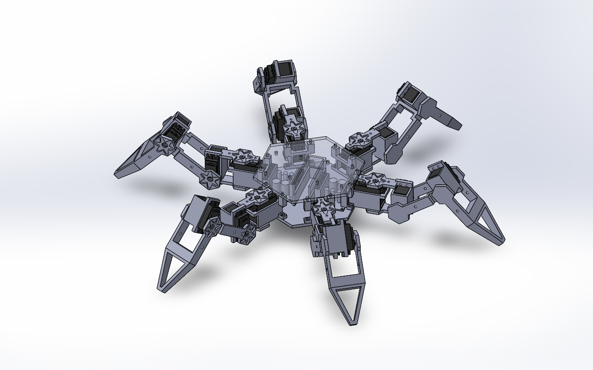
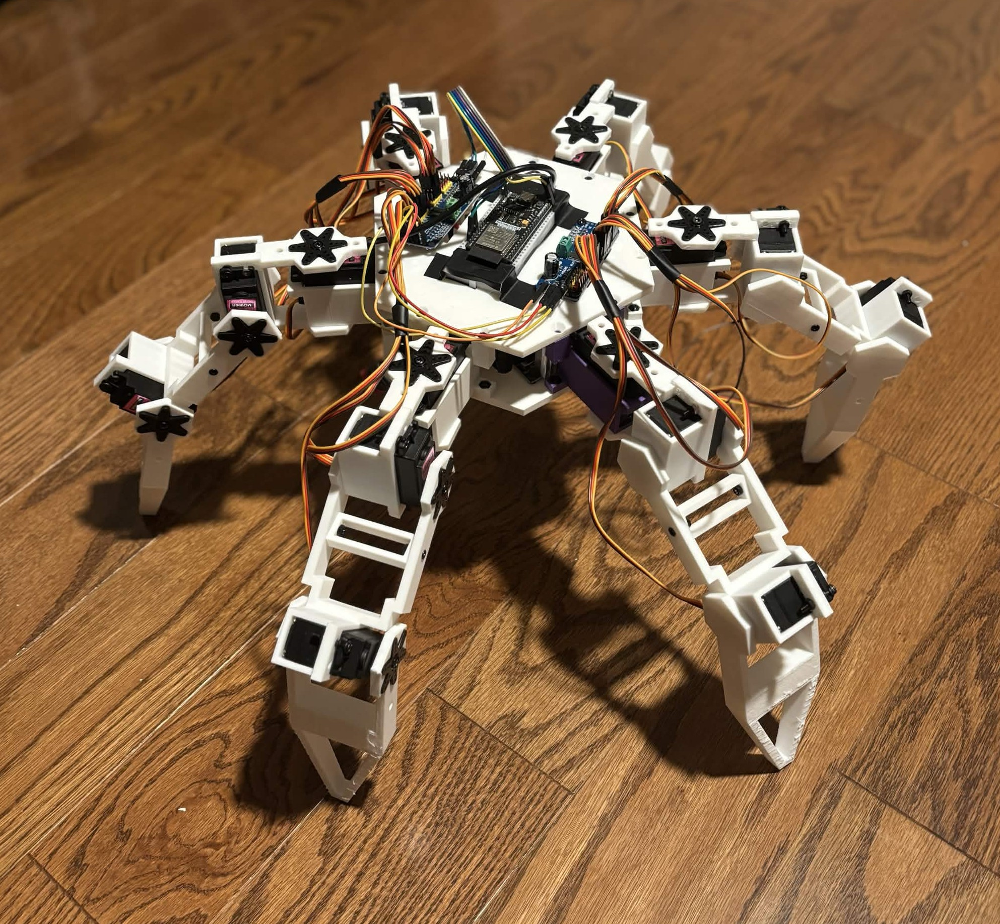
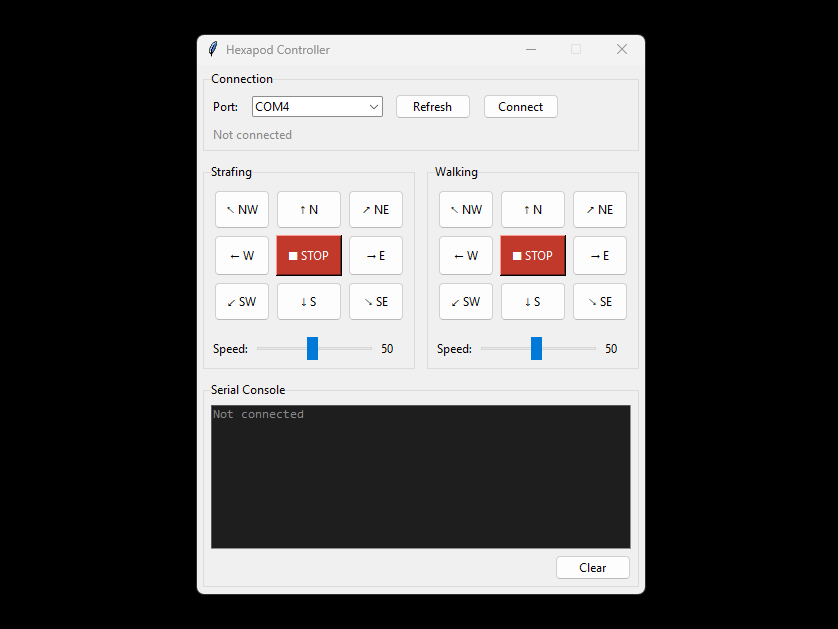

Robotics · 2026
Hexapod
Walking Robot
A six-legged walking platform with 18 servos, a gait engine that solves leg positions in real time, and a 3D printed chassis.
- Role
- Solo Project
- Duration
- Four months
- Tools/Skills
- SOLIDWORKS, C++, Python
- Status
- Complete



Walking test
Process
-
Picking Parts
Before spending anything, I had to figure out what parts would be right for what I need.
This was the most important part, especially since I was on a pretty tight budget. The biggest decision was the type of servo. They dictated how powerful the hexapod could be, and how expensive it would be for both price and power. Every other decision would have to be made around this choice.
- MG996R Servos: From the start it was between this and the SG90 (The two cheapest I could find). Eventually I landed on the MG996R since based on a rough estimate, the SG90 wouldn't have enough torque.
- ESP32 microcontroller: There were no huge restrictions on what MCU I could use, so I just used what I had on hand.
- 2S 15C Li-ion Battery: The biggest thing was voltage and maximum current output. I needed something with a voltage close to what my MCU and servos could handle, as well as a maximum current that could handle 18 servos stalling at once. The battery runtime was never a consideration, because this project was just for fun.
- PLA for the printed structure. Again, no huge restrictions on this front since I knew there weren't going to be any huge forces acting on the limbs.
-
Creating the Leg
Next I had to figure out one leg before I took on six. From my first time 3D printing to solving inverse kinematics equations, this section covered a lot.
Building it was a crash course in 3D printing. I had never touched a printer before, so I designed the leg the way I thought parts should look, and then found out what a printer will actually give you. Overhangs, tolerances, layer adhesion: none of it was in my head when I drew the first version. So, I had to redesign the whole leg.
The next part was figuring out the inverse kinematics. At first I had no idea what to do, but eventually I realised that if you flip it upside down, the leg is just a 3-axis robot arm. Knowing that really helped when I derived the formulas. Visualized calculations: Desmos
The last part was wiring it up and programming it. I connected the servo controller board to the ESP via I2C, implemented the PWM signalling, and hooked it all up to my derived inverse kinematic equations.
-
Full Chassis Assembly
This is where I put it all together. Printing the central plate, soldering the power harness, and a very long time assembling.
After a 2-hour assembly (yikes), I finally got to see the full robot come together in real life. I soldered together the power harness, connected all the servos to the servo controllers, and finally powered it on... only for it to freak out. There were two major oversights I had to fix before I finally had it standing straight:
- Every servo needed to be centered at 90° before its horn went on.
- The buck converter I bought only worked for voltages above ~10V, despite saying the minimum was 6V. So, instead of buying another one, I soldered my two 7.2V batteries in series to get a 14.4V source.
-
Control and Gait
Last part was programming the input and gait. I went with a Python serial front end for simplicity, and a tripod gait for speed.
This part caused me some trouble since I was working under many mechanical restrictions; angle limits due to leg design, servo speed limits, as well as the terrible servo backlash, these were all contributing factors. This forced me to add a lot of restrictions to the code to ensure that those limits would never be hit.
Afterwards, I implemented the tripod gait. This is where the six legs are split up into two groups of three, where each group takes turns stepping in the target direction. This gait is not only the simplest to implement, but the fastest in terms of moving speed.
Finally I tied it up with a simple Python front end. This includes a serial connection panel, movement buttons, as well as a debugging log window.
Specifications
| Degrees of freedom | 18 (three per leg) |
|---|---|
| Controller | ESP32 |
| Actuators | 18 × MG996R, 5 V bus |
| Servo Controller | PCA9685 |
| Mass | 2.1 kg with battery |
| Walking speed | 0.4 km/h, tripod gait |
What I learned
- Design for the printer. Overhangs, tolerances and layer orientation decide the geometry, I learned that after having to redraw the leg.
- Inverse kinematics is just trigonometry and linear algebra.
- Ease of assembly is worth it. Next time: heat set inserts, and a design with maintenance in mind.
Next revision
Custom servos, LiDaR sensors, and a bigger chassis